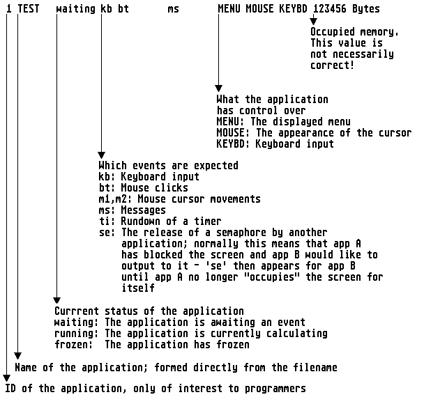

With the task-manager of MagiC one can perform various tasks, such as the freezing, unfreezing or terminating processes, for instance. The task-manager is called by the [Control]-[Alternate]-[Esc] key combination. After the call a list of all programs in memory appears, which is built up as follows:

Note: Below this list there is a menu making a series of commands available for controlling the system. Since the mouse is unavailable, selection must be made by pressing the listed shortcut key (shown below each command). In detail:
| Command | Meaning |
| Control | MagiC attempts to give the selected application control over the screen and mouse - this may help with deadlocks in some circumstances |
| freeze | The selected application is frozen; it is then invisible to all other programs and is not assigned any CPU time |
| OK | Return to normal operation; the task-manager is exited without performing any action |
| prev, next | One line of the above-mentioned list is always shown in inverse video - which one this is can be set with the cursor up/down keys; any following commands refer to the application that is selected in this way. Applications with a set ID can also be seleceted by typing in the corresponding number. |
| Switch | The menu bar of the selected application will be activated |
| Terminate | The selected application is kicked out of the memory, which usually results in all of its data being lost; sometimes this may lead to a crash, so this function should be used with particular care |
| unfreeze | With this command the frozen applicationen is unfrozen again; you can then continue your work at the position where it was frozen previously |
See also: Process functions U:\\PROC